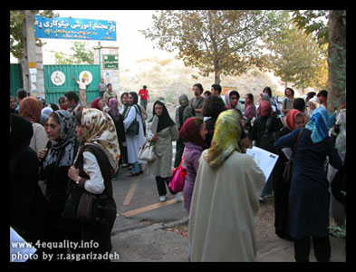
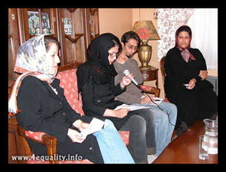
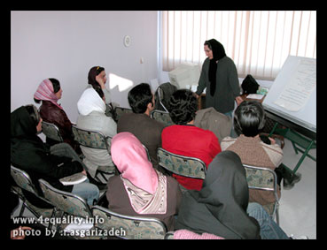
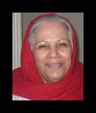

پذيرش > تریبون > گزارش كمپين > دو سال با کمپین یک میلیون امضا، مبارزه ای ادامه دار برای برابری خواهی
 روز شمار کمپین /سال اول روز شمار کمپین /سال اول

 دو سال با کمپین یک میلیون امضا، مبارزه ای ادامه دار برای برابری خواهی دو سال با کمپین یک میلیون امضا، مبارزه ای ادامه دار برای برابری خواهی
5 شهریور 1387 - مریم حسین خواه - نسخه قابل چاپ
دو سال از آغاز به کار کمپین یک میلیون امضا برای تغییر قوانین تبعیض آمیز می گذرد. دو سال پر فراز ونشیب که هر روز آن پر از اتفاق بود و تجربه. در روزهای سختی که هیچ سهمی از امکانات عمومی این شهر نداشتیم و در عوض تهدیدات امنیتی هر روز عرصه را به ما تنگ تر می کرد، در برابر موانعی که از هر طرف جلوی ما قد علم می کردند روش های تازه ای را آزمودیم. آموختیم که هرگز ناامید نشویم و حتی در روزهایی که یارانمان به جرم برابری خواهی پشت دیوارهای بلند اوین اند و تیغ تیز بازداشت و بازجویی و احکام سنگین تعزیری وتعلیقی بالای سرمان است، تلاش برای عمومی کردن مطالبالت برابری خواهانه و گفتگوی چهره به چهره با مردم را متوقف نکنیم.
روزشمار دوسالی که ما اعضای کمپین یک میلیون امضا در سراسر ایران درکنار یکدیگر پشت سر گذاشتیم، مروری است بر تمام روزهای تلخ و شیرینی که نطفه کمپین یک میلیون امضا آرام شکل گرفت و جوانه زد و به بار نشست.
5شهریور 1386: كمپين يك ميليون امضا براي تغيير قوانين تبعيض آميز آغاز به كار كرد

هیچ کس نمی داند روز اولی که جرقه کمپین یک میلیون امضا زده شد، کی بود؟ شاید 22 خرداد زیر ضرب باتوم های پلیس در میدان هفت تیر، شاید قبل تر از آن وقتی که دفترچه های صورتی رنگ "تاثیر قوانین بر زندگی زنان " را آماده می کردیم تا به دست مردم برسانیم.شاید هم تمام آن روزهایی که زیر بار این قوانین تبعیض آمیز له می شدیم و به فکر چاره بودیم.
این جرقه ها اما بالاخره شعله ور شد. 5 شهریور 86 بود و زنان و مردانی که می خواستند اولین امضاهایشان را بر پای بیانیه کمپین یک میلیون امضا برای تغییر قوانین تبعیض آمیز بگذارند، یکی یکی از راه می رسیدند.از چند ماه پیش در تدارک آغاز کمپین بودیم و قرارمان برای اعلام رسمی آغاز به کار کمپین سالن اجتماعات یک موسسه خیریه بود. درهای موسسه اما قفل بود.از طرف نیروهای انتظامی و امنیتی دستور آمده بود که برنامه باید لغو شود.... کمپین اما داشت متولد می شد. نمی شد متوقفش کرد. اولین امضاها در خیابان بر پای بیانیه کمپین نشست. 200 امضا از فعالان زن، وکلا، هنرمندان، نویسندگان، شاعران، روزنامه نگاران، کارگران، نویسنده ها، فعالان شهرستان ها و مردمی که ما نمی شناختیمشان و فقط صدای مان را شنیده بودند.
24 شهریور:کمپین به تبریز رفت
اولین شهری که میزبان کمپین شد، تبریز بود. تبریزی ها که از همان روز اول و پشت درهای بسته موسسه رعد کنار کمپین بودند.پس از پس از برگزاری دو کارگاه آموزشی در تهران، اولین کارگاه شهرستانی را 24 و 25 شهریور 1385 برگزار کردند.
فیروزه مهاجر ، زهره ارزنی ، خدیجه مقدم و شهلا انتصاری در کارگاهی که 23 نفر از فعالان زن تبریزی و اعضای سازمان های غیردولتی این شهر حضور داشتند، از اهداف کمپین گفتند و شیوه کارش و موارد حقوقی که به آن اعتراض داریم.
کلید آغاز به کار رسمی کمپین تبریز همان روز با تشکیل کمیته های آموزش ، روابط عمومی و مالی اولین زده شد.
28 مهر: کمپین در اصفهان
اصفهانی ها برای آغاز به کار کمپین منتظر برگزاری کارگاه آموزشی نماندند و با برگزاری نشست های حقوقی که به همت وکیل همشهری شان"محمد علی دادخواه" برگزار شد، کار را شروع کردند. «خدیجه مقدم» از اعضاي گروه آموزش كمپين هم در این نشست برایشان از کمپین گفت و چگونگی همکاری با آن .
این نشست در دفتر انجمن زنان مبارزه با آلودگی محیط زیست شاخه اصفهان برپا شد و تعدادی از فعالان تشکل های غیر دولتی و علاقه مندان به بحث زنان از جمله اعضا شبکه تشکل های غیر دولتی زنان حضور داشتند.
اصفهانی ها در این نشست تصمیم گرفتند به استناد تجربه های قبلی شان گروه هایی که به شکل تشکلی یا فردی قصد همکاری با کمپین را دارند بدون اینکه دور محور و چارت خاصی جمع شوند اقدام به این کارکنند و درنهایت امضا ها از طریق یک هماهنگ کننده به تهران ارسال شود.
13 آبان: همدان هم به كمپين پيوست
اوایل مهر ماه 85، چند دختر و پسر جوان همدانی بیانیه کمپین را در سالن اجتماعات ورشو تهران درحاشیه نشست سازمان های غیردولتی امضا کردند و یک ماه بعد ایمیل زدند که می خواهیم کمپین را به شهرمان ببریم.
محل برگزاری کارگاه خانه تشکلهای همدان بود و 15 نفری که در کارگاه شرکت داشتند نیمی شان اعضای جوان تشکل های غیردولتی بودند و نیم دیگر معلمان میانسالی که می خوساتند در کمپین فعالیت کنند. این کارگاه را سارا لقماني و افروز مغزي برگزار کردند.
14 آبان:کمپین به گرگان رسید
گرگانی ها هم از همان روز اول بودند. جمع آوری امضا را هم از همان روزها شروع کرده بودند. شکل گرفتن گروه کاری و آماده سازی مقدمات برای برگزاری کارگاه اما به آبان ماه رسید.
گروه کوچک مطالعاتی 5،6 نفره ای که قبل از کمپین در حال شکل گیری بود، هسته اولیه کمپین شد و توانست با تشکیل یک کارگاه 22 نفره، آغاز به کار کمپین گرگان را رسما اعلام کند
این کارگاه در کانون دوستداران کتاب، با همکاری زهره ارزنی، سارا لقمانی و جلوه جواهری از کمپین تهران برگزار شد.
18 آبان:کمپین زنجان، سازماندهي گسترده و منظم
قرار بود فعالان زنجان هم در نشست افتتاحیه کمپین صحبت کنند. نشست برگزار نشد و زنجانی ها چند ماه بعد یک نشست عمومی درباره قوانین تبعیض آمیز را در شهر خودشان برگزار کردند. نشستی با موضوع "بررسي جايگاه زن در قوانين مدني" که 11 آبان ماه با حضور نسرین ستوده و بيش از 100 نفر از فعالان زنجانی برگزار شد.الناز ناطقی و ترانه امیرتیموری نیز در این نشست نسرین ستوده را همراهی می کردند.
کمپینی های زنجان اعضای موسسه غير دولتي ترانه بودند كه از سال 82 در زمينه زنان می کردند.بنا به همان سابقه بود که 18 آبان ماه، یک هفته پس از برگزاری نشست با دعوت از همه علاقمندان به فعالیت در کمپین کمیته های کمپین یک میلیون امضا را در زنجان تشکیل دادند.
تشکیل كميته های اطلاع رساني، مالي ، تدارکات، آموزش، شهرستان ها و سازماندهي اولین قدم زنجانی ها بیرا شکل گرفتن کمپین در این شهر بود.
23 آبان1385: کمپین یکمیلیون امضا در کرج
پس از شهرهایی که از روز اول همراه کمپین بودند، نوبت به کرج رسید که به دلیل نزدیکی به تهران بسیاری از فعالان آن در کمپین تهران حضور داشتند.
کارگاه کرج را خدیجه مقدم و زهره ارزنی برگزار کردند و با حضور 60 نفر ا اقشار مختلف جامعه، یکی از متفاوت ترین کارگاه های کمپین بود.
در این کارگاه از زنان خانهدار، دانشجو، معلم، دبیر، استاد دانشگاه، پزشک، پرستار و مترون بیمارستان گرفته تا زنانی که مدیر مهدکودک، مربی سوارکاری، عکاس، گرافیست، نقاش و کارگردان سینما بودند حضور داشتند. علاوه بر این تعدادی از اعضای چند انجیاو مثل اعضای جمعیتهای محیط زیستی و همیاری سلامت روان و... نیز با هدف فعالیت در کمپین به این کارگاه آمده بودند.
29 آبان:ارونداتی روی، به کمپین " یک میلیون امضا" پیوست
ارونداتی روی(Arundhati Roy) اکتیویست، فمینیست و نویسنده نام آشنای هندی به کمپین " یک میلیون امضا برای تغییر قوانین تبعیض آمیز" پیوست.
این فمینیست و اکتیویست برجسته، در دیدار با شیرین عبادی، برنده جایزه صلح نوبل و از اعضای کمپین " یک میلیون امضا برای تغییر قوانین تبعیض آمیز" اعلام حمایت و همبستگی خود با این حرکت مدنی برابر خواهانه جمعی از زنان ایرانی اعلام کرده و بیانیه این کمپیین را امضا کرد.
11 آذر1385: كمپين يك مليون امضا به يزد هم رسيد
كارگاه يزد در يك مغازه كوچك بود. مغازه اي كه صاحبش براي چند ساعت آن را در اختيار كمپين گذاشته بود و بچه هاي يزد با كرايه 20 صندلي و آوردن يك تخته سفيد آن را براي برگزاري كارگاه آماده كرده بودند. در همدان و تبريز و گرگان و يزد بار اصلي هماهنگي افراد براي شركت در كارگاه آموزشي به دوش سازمان هاي غيردولتي زنان بوده و شركت كنندگان نيز اغلب اعضاي فعال اين تشكل ها بودند. در يزد اما به دليل فعال نبودن تشكل هاي يزد اين گروه با شيوه اي متفاوت شكل گرفته بود. با ارتباط چهره به چهره با فعالان اجتماعي شهر و حساس كردن آنها به نابرابري هاي حقوقي و در نهايت جلب موافقت و همكاري آنها براي راه اندازي كمپين يك ميليون امضا در يزد.
براي كارگاه يزد يك تيم شش نفره راهي اين شهر شد. يك وكيل براي آموزش هاي حقوقي:زهره ارزني؛ يك تسهيلگر براي آموزش چهره به چهره و معرفي طرح:سارا لقماني؛ يك نفر از كميته مالي: ناهيد جعفري؛ دو نفر از كميته داوطلبان براي هماهنگ كردن برگزاري كارگاه و ارتباط گرفتن با داوطلبان يزدي: جلوه جواهري و زارا امجديان و يك نفر از كميته رسانه براي پوشش خبري كارگاه: مريم حسين خواه.
كارگاه با دادن شماره هاي تماس و برنامه ريزي براي يك همكاري مستمر و بلند مدت به پايان رسيد. با اميد به اينكه گردهم آمدن اين گروه كوچك، آغازي باشد براي حركت هاي هدفمند و سازماندهي شده در يزد و شايد هم نقطه شروعي براي شكل گيري سازمان هاي غيردولتي زنان.
15 آذر: اولین گزارش عملکرد کمپین
اولین گزارش عملکرد کمپین در سایت تغییر برای برابری منتشر شد. این گزارش شیوه کار کمیته های مختلف کمپین شرح داده و نگاهی دارد به فراز و نشیب های کمپین در عمر سه ماهه اش.
23 آذر1385 : اولين نشست سراسري دست اندركاران كمپين يك ميليون امضا

سه ماه از آغاز به کار کمپین گذشته است. حالا به آن جمع کوچک 54 نفره، تعداد زیادی اضافه شده است. زنان و مردانی که بسیاری از آنها را قبل از کمپین نمی شناختیم. یک نشست عمومی می توانست فرصت خوبی برای مرور فعالیت های سه ماهه و برنامه ریزی برای ادامه کار باشد.
به تمام فرهنگسراها و سالن های اجتماعات تهران سر زدیم. هیچ کدامشان اجازه برگزاری یک برنامه دو ساعته را به ندادند. خواستیم سالن اجاره کنیم. با توجه به اتفاقی که در افتتاحیه افتاد و ممانعت نیروی انتظامی از برگزاری مراسم، حتی در قبال پرداخت پول نیز موفق به گرفتن مکانی برای چند ساعت نشدیم.
کمپین تازه شروع شده بود و باید پیش می رفت. حالا که در فرهنگسراها به روی ما بسته بود، خانه هایمان را فرهنگسرا کردیم. اولین نشست عمومی کمپین در زیر زمین منزل "مه لقا ملاح"، مدیر انجمن زنان مبارزه با آلودگی محیط زیست برگزار شد.
صندلی های اجاره ای را در زیر زمین چیدیم. پوسترهای کمپین را روی دیوارهای چسباندیم. با حداقل امکانات سن و تریبون و میکروفن را آماده کردیم و نشست برگزار شد. سالن کوچک بود و جمعیت زیاد.
به غیر از اعضای تهران، فعالان كرمانشاه، گرگان، زنجان، مشهد، كرج، تبريز، همدان و کرج نیز آمده بودند.
23 آذر ماه 1385: اولین بازداشت؛ جمع آوری امضا در مترو
هنوز به خانه هایمان نرسیده ایم که خبر بازداشت "زینب پیغمبرزاده" می رسد. در مترو با مردم درباره کمپین یک میلیون امضا و تبعیضات قانونی بر زنان گفتگو می کرده و از آنها می خواسته بیانیه کمپین را امضا کنند که دستگیر می شود.
این اولین بازداشت اعضای کمپین به خاطر جمع آوری امضا است. اعتراضات ما به اینکه جمع آوری امضا برای اعتراض به قوانین جرم تلقی نمی شود به جایی نمی رسد. اتهام زینب پس از 5 روز بازداشت در بازداشتگاه های گیشا و وزرا، "اقدام علیه امنیت ملی" اعلام می شود.
28 آذر1385: پیوستن جیانا نانینی، ستاره ایتالیایی موسیقی راک ، به حامیان کمپین
جیانا نانینی، ستاره ایتالیایی موسیقی راک ، به حامیان کمپین یک میلیون امضاء پیوست.
این ستاره ایتالیایی موسیقی راک ، که از فعالین حقوق بشر و فمنیستهای پیشرو ایتالیا است، در سفری که به تهران داشت از روند جریان کمپین در ایران آگاهی یافته و بیانیه کمپین را به عنوان حامی امضا نموده و با اعضای کمپین اعلام همبستگی و همراهی کرد.
[ 6 دی1385: "کمپین و اعضایش کاندید عنوان ایرانی منتخب سال شد>http://www.4equality.info/spip.php?article253 ]
کمپین موفق شده که توجه ایرانیان خارج از کشور را نیز به خود جلب کند.سایت انگلیسی زبان "ایرانیان" کمپین و همه اعضایش را کاندید عنوان " ایرانی منتخب سال" کرد.
8 دی1385: کمپین یک میلیون امضا به کرمانشاه رسید

کمپین شهر به شهر جلو می رود. کارگاه کرمانشاه به دعوت سازمان غیردولتی ژیار و با شرکت 30 نفر از فعالان یان شهر برگزار شد. منصوره شجاعی، شهلا انتصاری و گلناز ملک از تهران برای برگزاری این کارگاه رفته بودند.
20 دی 1385: بازداشت نسیم سرابندی و فاطمه دهدشتی به جرم جمع آوری امضا
کمتر از یک ماه بعداز بازداشت زینب، نسیم سرابندی و فاطمه دهدشتی هنگام جمع آوری امضا در مترو بازداشت می شوند، جرم آنها بکارگیری مسالمت آمیزترین روش مدنی در احقاق مطالبات حقوقی شان است.
نسیم و فاطمه پس از یک روز بازداشت در بازداشتگاه گیشا،به قید کفالت آزاد می شوند.
25 دی1385: جمع هم انديشي فعالان جنبش زنان به كمپين يك ميليون امضا پيوست
جمع هم اندیشی فعالان جنبش زنان در جلسه 20 دیماه 1386 تصمیم گرفت به صورت گروهی به "کمپین یک میلیون امضا برای تغییر قوانین تبعیض آمیز " بپیوندد. این گروه که متشکل از جمعی از اعضای سازمان های غیردولتی و فعالان مستقل جنبش زنان است، در فعاليت چند ساله خود، تقویت ارتباطات و همکاری های مشترک بین فعالان جنبش زنان را در دستور کارش قرار داده است. پیش از این اعضا گروه هم اندیشی به صورت انفرادی بیانیه کمپین را امضا کرده بودند و برخي از اعضاي اين جمع نيز از ابتدا عضو كمپين بودند، اما در این جلسه تصمیم گرفته شد پیوستن گروهی هم اندیشی زنان به کمپین به صورت رسمی اعلام شود.
30 دی1385:نشست مشترک اعضای کمپین و زنان اصلاح طلب
با گسترش کمپین، طیف های مختلف جنبش زنان نیز یکی یکی به کمپین می پیوندند و حمایت خود را از این حرکت اجتماعی اعلام می کنند.
پس از جمع هم اندیشی، زنان اصلاح طلب نیز در نشستی که در منزل یکی از اعضای کمپین برگزار شد، با امضای بیانیه کمپین، راهکارهای همکاری با این حرکت و تحقق مطالبات حقوقی زنان را بررسی کردند.
فاطمه راکعی، فخری محتشمی پور، فریده ماشینی، زهرا اشراقی، زهرا نژاد بهرام، شهیندخت مولاوردی، آذر منصوری و ... از جمله زنان اصلاح طلبی بودند که در این نشست شرکت داشتند.
21 بهمن1385: نخستین جلسه هماهنگی کمپین یک میلیون امضا در دانشگاه تبریز
نخستین جلسه هماهنگی کمپین یک میلیون امضا برای تغییر قوانین تبعیض آمیز به همت انجمن اسلامی دانشجویان دانشکده فنی دانشگاه تبریز برگزار شد. دراین جلسه برخی از اعضای جنبش دانشجویی و اعضای جنبش زنان تبریز ضمن بحث و بررسی در مورد ابعاد گوناگون جنبش زنان که بخشی از آن به اشتذراک با مطالبات هویتی فرهنگی مربوط می شد دیدگاه های خود را در خصوص مسائل مختلف مرتبط با جنبش زنان مطرح کردند.
27 بهمن1385: اعلام حمایت شبکه بینالمللی آموزش و همکاری زنان ، از کمپین
سازمان بینالمللی آموزش و همکاری زنان (WLP)، که همکارانی در 18 کشور دنیا از جمله افغانستان، برزیل، کامرون، مصر، هند، اندونزی، ایران، اردن، لبنان، مالزی، نیجریه، نیکاراگوئه و ... دارد، پس از گذشتن 5 ماه از فعالیت کمپین یک میلیون امضا برای تغییر قوانین تبعیض آمیز، حمایت خود را از کمپین اعلام کرد . WLP از سازمان های دیگر نیز خواست تا به کمپین بپیوندند.
1 اسفند1385: حمايت پروفسور نيکي کدي از کمپين يک ميليون امضاء
نيکي آر کدي استاد افتخاري تاريخ ايرانيان در دانشگاه ايالتي کاليفرنيا و نويسنده کتابهای ايران مدرن : ريشه ها و نتايج انقلاب و زنان در خاور ميانه : گذشته و حال با صدور بیانیه ای حمایت خود را از کمپین اعلام کرد.
3 اسفند 1385 : كارگاه كمپين يك ميليون امضاء در مشهد

شهر مشهد ، سوم اسفند ماه ميزبان اعضاي كمپين بود. کارگاه در دفتر کوچک اقوام یکی از اعضای برگزار شد.چند نفر از فعالان مشهد قبل از برگزاری کارگاه جمع اوری امضا را شروع کرده بودند. کارگاه اما آغازی بر کار گروهی و سازمان یافته مشهدی ها بود.
زهره ارزنی، زارا امجدیان این کارگاه 15 نفره را برگزار کردند.
5 اسفند385:آغاز به کار کمیته مادران کمپین
پس از دستگیری زینب پیغمبر زاده و تلاش مادران عضو کمپین برای آزادی زینب، جرقه تشکیل کمیته مادران نیز زده شد.اولین نشست کمیته مادران کمپین یک میلیون امضاء روز شنبه پنجم اسفند ماه برگزار شد. در این نشست اعضاء پس از گفتگو و توافق بر سر توانمندیهای گروهی، با تاکید بر اهداف کلی کمپین اعلام موجودیت کرده و وظائف کمیته را چنین شرح دادند: آگاهی رساندن به جامعه در مورد قوانین تبعیضآمیز بر زنان، جمعآوری امضاء برای تغییر قوانین برگزاری کارگاههای آموزشی برای مادران دیگر ،برقراری حلقه ارتباطی بین جوانان، خانواده و پشتیبانی از آنان
8 اسفند 1385:کارگاه کمپین در دانشگاه خواجه نصير
کارگاه آموزشی حقوق زنان٬ نیز در همین روز از طرف انجمن اسلامی دانشکده های برق و صنایع خواجه نصیر و با حضور مریم حسین خواه و زهره ارزنی برگزار شد.
پپیشنهاد اولیه برای برگزاری کارگاه در دانشگاه خواجه نصیر را یکی از پسران دانشجوی کامپیوتر مطرح می کند. اما برگزایر کارگاه چندان آسان نیست. چند روز قبل از برگزاری کارگاه خبر می رسد که باز هم برای برداشتن تبلیغ کمپین٬ که بچه های انجمن برق برای جمع آوری امضا روی تابلو نصب کرده بودند٬ تذکر داده اند٬ تبلیغات برای برگزاری کارگاه می شود چهره به چهره و شفاهی و محل برگزاری کارگاه به جای سالن اجتماعات دانشگاه می شود اتاق دفاعیه.
با همه اینها اما کارگاه برگزار می شود ودانشجویان خواجه نصیر جمع آوری امضا را آغاز می کنند.
10 اسفند1385: و بالاخره کارگاه رشت .....
کارگاه رشت اسفند ماه برگزار شد. مقدمات برگزاری کارگاه مانند شهرهای دیگر بود. خود کارگاه اما نه...
30 داوطلب رشتی از دو گروه فعال در این شهر آماده شروع کمپین در شهرشان بودند و همه چیز هماهنگ بود. اما روز قبل از کارگاه زهره اسد پور از فعالان رشتی به اطلاعات احضار شد. با تهدید زهره از او خواسته بودند که کارگاه برگزار نشود. زهره بر حق شهرندی جمع شدن در منازل شخصی و صحبت کردن درباره قوانین تاکید کرده بود و به همراه بقیه فعالان رشت تصمیم گرفته بودند که حتما کارگاه را برگزار کنند و حتما کمپین را به رشت ببرند.
کارگاه رشت برگزار شد و از همان روز اول رشتی ها مقدمات راه اندازی سایت کمپین رشت را آغاز کردند.
10 اسفند1385: سومین فیلتر سایت در کمتر از دوهفته
بار اولی که سایت کمپین فیلتر شد، آنهایی که سابقه کار در سایت های زنان و به تبع آن فیلتر شدن های چند باره را نداشتند، غمگین و خشمگین شدند. با تکرار فیلترینگ سایت در کمتر از دو هفته آنها هم به این روند عادت کردند و علاوه بر راه اندازی نشانی جدید سایت، به دنبال ابتکارات تازه رفتند.
راه اندازی وبلاگ هایی به نام «تغییر برای برابری» و انتشار مطالب جدید سایت کمپین در آنها یکی از این ابتکارات بود.
در اولین گام شش وبلاگ به صورت همزمان راه اندازی و اقدام به انتشار مطالب جدید "تغییر برای برابری" کرد.
14 اسفند:سیمنار حمایت از کمپین در سلیمانیه عراق
شش ماه از شروع به کار کمپین گذشته و حالا علاوه بر شهرهای مختلف ایران، فعالان کشورهای مختلف نیز حمایت خود را از کمپین اعلام می کنند.
سازمان حقوق زنان كرد - حقوق بشر از اولین گروه های خارج از کشور بود که سميناري در حمايت از كمپين يك ميليون امضاء برگزار کرد. در اين سمينار سازمان هاي زنان و حقوق بشر زنان كردستان حضور داشتند.
16 اسفند1385:کارگاه زنان کرد در تهران
کمپین کردستان هم آغاز به کار کرد. این بار اما به جای اینکه فعالان تهرانی به کردستان بروند. کردها به تهران آمدند. یک کارگاه 12 نفره برای زنانی که علاوه بر تبعیضات جنسیتی با تبعیضات قومی نیز دست و پنجه نرم می کنند و به لزوم تلاش بریا رفع نابرابری ها واقف اند.پس از کرمانشاه، سنندجی ها دومین شهر کردنشینی بودند که به کمپین پیوستند و توانستند این حرکت اجتماعی را در دیگر شهرهای منطقه نیز گسترش دهند.
18 اسفند1385 :معرفی کمپین یک میلیون امضاء درجشن روز جهانی زن در وین
جامعه مستقل زنان ایرانی مقیم اتریش- وین در جريانِ تدارکِ برگزاریِ جشن ۸ مارس تصمیم گرفت تم اصلی جشن امسال را ” کمپین یک ميليون امضا “ انتخاب کند و ویژه نامه امسال خود را به معرفی این کارزار اختصاص داد.
22 اسفند1385: هبستگی با کمپین یک میلیون امضا در آلمان
زنان ایرانی فعال در آلمان نیز به مناسبت 8 مارس، بحث کمپین را در برنامه های مختلفی که در این کشور برگزار می شد مطرح کردند.
در برنامه ای که به مناسبت ٨ مارس برگزار شد، اکسیون همبستگی با «کمپین یک میلیون امضا» محور کار قرار گرفت، متن بیانیه ترجمه شده به انگلیسی و آلمانی پخش شد و فعالان زن شروع به جمع اوری امضای بیاینه از ایرانی ها و امضاهای حمایتی از آلمانی ها کردند.این برنامه شروعی برای فعالیت کمپین از سوی ایرانیان مقیم خارج از کشور بود.
24 اسفند1385:دومین نشست عمومی کمپین
دومین نشست عمومی اعضای تهرانی کمپین یک میلیون امضا در حالی برگزار شد.این بار هم مثل همه کارگاه ها و نشست های کمپین منزل یکی از داوطلبان کمپین میزبان اعضای آن بود.
بضاعت کم کمپین اجازه نداد تا همه 600 عضو کمپین که حالا در تهران، زنجان، تبریز، سنندج، مشهد، رشت، گرگان، همدان، یزد، کرج، شیراز، کرمانشاه و قم فعالیت می کنند دور هم جمع شود، اما شرکت کنندگان در این نشست تلاش کردند تا برآیندی از مباحث مطرح شده در شش ماهی که از آغاز به کار کمپین می گذرد را مورد توجه قرار دهند.
در همین روز کارگاه آموزشی قم در حال برگزاری بود و چند نفر از اعضای کمیته آموزش به این شهر سفر کرده بودند. برپایی سفره های هفت حق در کنارسفره های هفت سین، دادن جزوه های حقوقی به جای کارت پستال عید و تشکیل کاروان های کمپین در سال آینده از جمله برنامه های کمپین برای سال نو بود که در این نشست به آنها پرداخته شد.
29 اسفند1385: کمپین یک میلیون امضا در جمع آلمانی شهر آخن
اعضای کانون ره آورد آخن که در 8 مارس بحث راجع به کمپین یک میلیون امضا را آغاز کرده بودند. در ادامه کارزار وسیعی را جهتِ شناساندن کمپین یک ميليون امضا آغاز کرده و شروع به آماده سازی مقالات و فرمِ امضا وپوسترهای جشن که تم اصلی ان (هم آوا با یک ميليونِ امضا با قوانينِ زن ستییز) کردند. 16 صفحه امضا اولین نتیجه این تلاش فعالان آلمانی بود.
7 فروردین 1386 : عید دیدنی کمپینی ها
کمیته داوطلبان کمپین یک میلیون امضا سال 86 را با تقسیم خود به گروه های کوچکتر آغاز کرد. در مراسم عید دیدنی نوروزی کمیته داوطلبان و کمیته رسانه کمپین که با حضور 60 نفر از اعضا برگزار شد، گروه های جدیدی را از دل خود به وجود آورد.
برخی از فعالان کمپین که در آخرین پنج شنبه سال 85 دور هم جمع شده و فعالیت های شش ماهه شان را ارزیابی کرده بودند، 7 فروردین ماه در مراسم نوروزی و عید دیدنی خود، راهکارهای عملیاتی کردن پیشنهادات ارائه شده در آن نشست را بررسی کردند.
کمپین یک میلیون امضا حالا با گذشت 6 ماه از فعالیتش یک خانواده بزرگ شده و علاوه بر پیشبرد اهداف برابری خواهانه خود، یک حلقه قوی دوستی و همدلی نیز به وجود آورده است. با تکیه بر همین همدلی و دوستی است که برگزاری برنامه ها و نشست های مختلف کمپین با کمترین هزینه ممکن میسر می شود.
مهمانی 60 نفره دیروز که با هزینه 15 نفر از اعضای کمپین برای عید دیدنی گروه داوطلبان و گروه رسانه برگزار شد، نه تنها هیچ هزینه ای از صندوق کمپین خرج نشد، بلکه در این مراسم دویست و پنج هزار تومان نیز با عیدی هایی که اعضای کمپین دادند به موجودی کمپین اضافه شد.
13 فروردین 86:بازداشت پنج تن از اعضای کمپین "یک میلیون امضا"
سیزده بدر بود و قرار گذاشته بودیم به هر پارکی که می رویم دفترچه ها و بیانیه های کمپین را هم ببریم و امضا جمع کنیم. هر کدام در گوشه ای از شهر مشغول به در کردن 13 و جمع کردن امضا بودیم که خبر رسید پنج نفر از بچه ها در پارک لاله بازداشت شده اند.
ناهید کشاورز، سارا ایمانیان و همسر وی همایون نامی ، محبوبه حسین زاده و سعیده امین بعد از اینکه چند بار به بازداشت گاه وزرا و کلانتری صد و چهار میدان نیلوفر فرستاده شدند، شب را در وزرا به سر بردند.
14 فروردین سه نفر از بازداشت شدگان (سارا ایمانیان، سعیده امین، همایون نامی ) با سپردن قرار التزام در دادگاه انقلاب، آزاد و ناهید کشاورز و محبوبه حسین زاده به زندان اوین منتقل می شوند. انتقال این دو عضو کمپین به بند عمومی زندان اوین در حالی است که در جلسه دادگاه به بازداشت شدگان گفته می شود که با قرارکفالت آزاد می شوند .
ناهید و محبوبه 13 روز در بازداشت می مانند و در نهایت 26 فروردین ماه با قرار کفالت 20 میلیون تومانی برای هر یک از آنان، آزاد می شوند.
" اقدام علیه امنیت ملی از طریق فعالیت تبلیغی علیه نظام جمهوری اسلامی"اتهامی است که قبل از آزادی از زندان در بند 209 اوین به این دو عضو کمپین اعلام شد.
19 فروردین1385: حمایت حزب لیبرال سوئد از کمپین یک میلیون امضاء برای تغییر قوانین تبعیض آمیز
اعضای عضو مجلس حزب لیبرال سوئد و سایر سازمان های عضو این حزب طی بیانیه ای حمایت خود را از کمپین یک میلیون امضاء برای تغییر قوانین تبعیض آمیز در ایران ، اعلام کردند .
23 فروردین 1385:نشست «جنبش زنان٬ تهديدها و مقاومت ها» در دفتر تحكيم ادوار
محبوبه حسین زاده و ناهید کشاورز هنوز در زندان اند.فعالان جنبش زنان با برگزاری نشستی در دفتر ادوار تحکمی خواستار آزادی این دو عضو کمپین می شوند. نوشته های ناهید و محبوبه از زندان در این مراسم خوانده می شوند. در این مراسم نوشین احمدی خراسانی، پروین اردلان، ژیلا بنی یعقوب، شادی صدر و عباس عبدی از جنبش زنان می گویند و مقاومت آنها در برابر تهدیدها.
28 فروردین 1386:شهر ونکوور به استقبال کمپین رفت
گروه کوچکی از ایرانیان مقیم کانادا که با فعالیت های زنان در ایران آشنا بودند، اولین جلسه کمپین را در ونکور برگزار کردند. موضوع اصلی این جلسه بررسی کمپین و یافتن راه های همکاری با آن بود.
6 اردیبهشت 1386 :کمپین یک میلیون امضا در تقویم سال 2008 لیگ مقاومان جنگ
لیگ مقاومان جنگ که در سال 1923 از سوی مردان و زنان مخالف جنگ جهانی اول تشکیل شد، بیش از 50 سال است که تقویم میزی سالانه برای فروش تهیه می کند. هر تقویم زمینه ای به روز و جالب دارد که برخی شیوه های کار و فعالیت ضد نظامی گری را در آن ترویج می کند. WRL در صفحه دوم تقویم سال 2008 خود، کمپین یک میلیون امضا را به عنوان شیوه ای صلح آمیز برای تغییر قوانین تبعیض آمیز معرفی کرده است.
4 اردیبهشت 1386 :سایت تغییر برای برابری برای بار پنجم فیلتر شد
سایت تغییر برای برابری برای پنجمین بار فیلتر می شود.از آغاز به کار کمپین تا کنون تقریبا هر یک ماه و نیم یک بار سایت کمپین فیلتر شده است.
6 اردیبهشت 1386 :سومین نشست عمومی کمپین :"رابطه کمپین با احزاب و جنبش های دیگر"
سومین نشست عمومی اعضای کمپین " یک میلیون امضا برای تغییر قوانین تبعیض آمیز" با موضوع " رابطه کمپین با احزاب و جنبش های دیگر" در منزل مسکونی یکی از اعضای کمپین برگزار شد.
موضوع پانل اول این نشست "رابطه کمپین با احزاب سیاسی" و سخنرانان این پانل بهاره هدایت، زهره اسدپور و کاوه مظفری بودند. عنوان پانل دوم این نشست "رابطه کمپین با دیگر جنبش های اجتماعی" و سخنرانان سمیه رشیدی و شهلا انتصاری بودند.
20 خرداد 1386 : احترام شادفر (مادر کمپینی )و همسایه او /جمع آوری امضا

دو روز قبل از سالروز تجمع اعتراضی زنان در 22 خرداد دو نفر دیگر از اعضای کمپین یک میلیون امضا بازداشت می شوند، این بار نوک پیکان بازداشت ها دختران جوان کمپینی را رها کرده و به سراغ مادرانشان آمده است.
ساعت یک بعد از ظهر روز 20 خرداد ماه 1386 زنگ خانه زینب (احترام) شادفر از فعالان کمپین یک میلیون امضا به صدا در می آید. یکی از همسایه هایش که در جمع آوری امضا نیز فعال است، از احترام می خواهد جلوی در برود. او که 50 سال دارد، حین جمع آوری امضا دستگیر شده است. به ماموران گفته است که دفترچه کمپین و بیانیه امضا را از احترام گرفته است.
ماموران بدون نشان دادن حکم جلب، هردوی آنها همراه خود می برند و در پاسخ به نگرانی خانواده ها اعلام می کنند که :«به دستور دادیار برای پاره ای توضیحات می روند و تا یک ساعت دیگر می آیند. نگران نباشید و نمی خواهد بیایید خودشان بر می گردند.»
با پیگیری خانواده ها مشخص می شود که آنها را ابتدا به اماکن میدان نیلوفر و پس صدور حکم 24 ساعته برای آنها، به بازداشتگاه وزرا منتقل شده اند. در شعبه ویژه امنیت دادگاه انقلاب با قید التزام آزاد می شوند. پرونده همسایه احترام بسته می شود اما 8 ماه بعد، حکم 6ماه حبس تعلیقی به مدت دو سال برای احترام وی اعلام می شود.
شعبه 13 دادگاه انقلاب اسلامی اتهام احترام شادفر را " اقدام علیه امنیت ملی از طریق تبلبغ علیه نظام جمهوری اسلامی در کمپین یک میلیون امضا" اعلام کرده است. علت صدور این حکم جمع آوری امضا عنوان شده است
22خرداد 1386:بزرگداشت 22 خرداد از سوی اعضای کمپین
22 خرداد روز همبستگی زنان ایران است و زمانی برای بلند شدن ندای برابری خواهانه شان. فرقی نمی کند که جلوی دانشگاه تهران باشند، یا در میدان هفت تیر یا مثل امسال در خانه یکی از اعضای کمپین یک میلیون امضا. هر جا که باشند دست هاشان بهم گره می خورد و سرود ای زن ای حضور زندگی سر می دهند.
زنان و مردانی که در این یکسال بارها به خیابان آمده اند، کتک خورده اند، احضار شده اند و زندان رفته اند... یکی یکی با شاخه ای گل از راه می رسند. امروز 22 خرداد است و اگر نمی شود در خیابان و حتی سالنی کوچک در این شهر بزرگ گردهم آمد، درهای خانه هایمان را باز می کنیم و یاد 22 خرداد را گرامی می داریم.
شیرین عبادی،سیمین بهبهانی، شهلا لاهیجی، خدیجه مقدم، نسرین ستوده، بهاره هدایت،ژیلا بنی یعقوب و بیش از 100 نفر از اعضای کمپین مهمان این نشست بودند.
27 خرداد 1386: کمپین یک میلیون امضا در نخستین کنفرانس موسسه زنان نوبل
در اولین کنفرانس بین المللی موسسه زنان نوبل که در ایرلند برگزار شد، بخشی از برنامه به کمپین یک میلیون امضا برای تغییر قوانین اختصاص یافت.
بحث درباره کمپین یک میلیون امضا در روزهای کنفرانس بشدت درمیان اکتیویست های حاضر داغ بود، برخی پیشتر و به واسطه تلاش های شیرین عبادی در خارج ایران کمپین را می شناختند و بیانیه کمپین را امضا کرده بودند، برخی با اشتیاق فراوان در حمایت از کمپین بیانیه حمایتی را امضا کردند و برخی اعلام کردند که به انتشار و معرفی کمپین در وب سایت های خودشان اقدام خواهند کرد و برخی نیز اعلام کردند که با جمع آوری امضا دراین حرکت اعضای کمپین را یاری خواهند کرد. استقبال از کمپین یک میلیون امضا به حدی بود که حمایت از کمپین یک میلیون امضا به پیشنهاد شرکت کنندگان در فهرست برنامه های پیشنهادی موسسه زنان صلح نوبل نیز قرار گرفت.
2 تیر 1386 :سایت کمپین یک میلیون امضا برای بار ششم فیلتر شد
سایت کمپین یک میلیون امضا ، تغییر برای برابری، پس از گذشت دوماه از آخرین فیلترینگ، برای بار ششم فیلتر شد.
5 تیر 1386 :آغاز به کار وبلاگ کمپین در شیراز
سرانجام جوانه های این آرزو که هرشهری برای خود سایتی برای پوشش فعالیت های کمپین در آن شهر داشته باشد آغاز به روییدن کرد: "کمپین در شیراز" از امروز کارش را آغاز کرد.
در اين وبلاگ خاطرات اعضا در هنگام جمع آوري امضا .مقالات. گزارشهايي از برگذاري كارگاهها . و جلسات هفتگي . نقدي بر قوانين . مصاحبه با حقوقدانان و فعالان زنان گنجانده شده است.
20تیر ماه1386: بازداشت امیر یعقوبعلی
کمپین همچنان ادامه دارد. با تجربه هایش، با اعضای جدیدی که به این حرکت می پیوندند، با اضافه شدن هر روزه تعداد امضاها و با ادامه داشتن دستگیری ها.....
علت دستگیری ها همچنان جمع آوری امضا اعلام می شود، شیوه دستگیری ها اما یکسان نیست. پس از دستگیری مادران کمپینی نوبت به مردان برابر خواه می رسد.
20 تیرماه امیر یعقوبعلی در پارک اندیشه تهران حین جمع آوری امضا دستگیر می شود. امیر به سلول انفرادی بند 209 انتقال داده می شود و قاضی در پاسخ به مادر امیر که مگر جمع آوری امضا جرم است؟ می گوید:«امیر مرد است چکار به کار زنها دارد، برود بنشیند درسش را بخواند.»
با طولانی شدن بازداشت امیر و مشخص نشدن وضعیت وی از طرف مقامات قضایی، کمیته مادران کمپین یک میلیون طی نامه ای به ریاست محترم قوه قضائیه نسبت به بازداشت امیر یعقوبعلی و بهاره هدایت (عضو کمپین یک میلیون امضاء که همزمان با امیر به خاطر فعالیت های دانشجویی اش در بازداشت است) اعتراض کرده و خواستار رسیدگی به پرونده آنان می شود. تعدادی از مادران کمپینی 3 مرداد این نامه را به دفتر ریاست قوه قضائیه ارائه می دهند. امیر یعقوبعلی 17 مرداد ماه، پس از 28 روز بازداشت در سلول انفرادی با وثیقه 20 میلیون تومانی آزاد می شود.
30 تیر 1386 :یک رسانه دیگر برای خانواده کمپین: "کردها و کمپین یک میلیون امضا"
رسانه های کمپین یک میلیون امضا برای تغییر قوانین تبعیض آمیز به تدریج از دل شهرهای ما جوانه می زنند. پس از سایت کمپینی ها در شیراز، اکنون سايت "كردها و كمپين يك ميليون امضا" به قصد انعكاس فعاليت هم وطنان كرد زبان در جهت اهداف كمپين يك ميليون امضا شروع به كار كرده است.
طبق گفته گردانندگان سایت کردها و کمپین یک میلیون امضا اين سايت مطالب خود را به دو زبان كردي و فارسي منتشر مي كند و سعي در هر چه بيشتر گستراندن نداي برابری خواهي كمپين يك ميليون امضا در ميان زنان و مردان كرد دارد.
22 مرداد 1386 :اولین احکام زندان برای اعضای کمپین
نخستین دادگاه اعضای کمپین یک میلیون امضا برگزارشد. دادگاه نسیم سرابندی و فاطمه دهدشتی روز 21 مرداد در شعبه 28 دادگاه انقلاب برگزارو همان موقع هم حکم دادگاه اعلام شد. آنان به اتهام اقدام علیه امنیت ملی از طریق فعالیت تبلیغاتی علیه نظام محکوم شدند. استناد قاضی در مورد اتهام آنان ماده 500 قانون مجازات اسلامی بود. نسیم و فاطمه هردو به 6 ماه حبس تعلیقی تا 2 سال محکوم شدند.
4 شهریور 1386: نمایشگاه نقاشی «همه مادران من »
نمایشگاه نقاشی با عنوان «همه مادران من» همزمان با سالگرد کمپین یک میلیون امضا با آثار 33 هنرمند نقاش در فرهنگسرای بهمن افتتاح شد. این نمایشگاه به مدت 10 روز در این نگارخانه دائربود.
حضانت فرزندان را به مادران بسپارید ؛ من مساوک نصف 1=1+1 ؛ سلطان غم، مادر ؛ ناموس ؛ مادربهتر است یا عمو؟ ؛ ما در پیاله عکس رخ یار دیده ایم ؛ گویند مرا چو زاد مادر و اول بگو شام چی داریم؟.. تم های این نمایشگاه بودند.
گفتگو با مردم درباره کمپین و لزوم تغییر قوانین از جمله برنامه های جنبی این نمایشگاه بود.
5 شهریور 1386 :وبلاگ کمپین رشت هم به تریبون های کمپین افزوده شد
درآستانه سالگرد کمپین یک میلیون امضا برای تغییر قوانین تبعیض آمیز تریبون مجازی دیگری به رسانه های کمپین افزوده شد.
به مناسبت سالگرد کمپین روزهای پنجم و ششم در رشت نشست هایی درباره نقد و بررسی کمپین نیز برگزار شد هرچند شب قبل از این نشست نیز همچون گذشته آنها با تلفن های تهدید آمیز روبه رو بودند.
6 شهریور 1386 :كنفرانس مطبوعاتي سالگرد كمپين يك ميليون امضا
كنفرانس مطبوعاتي سالگرد کمپین یک میلیون امضا در پاركينگ ماهنامه توقيف شده نامه برگزار شد. این کنفرانس با حضور شیرین عبادی، سیمین بهبهانی، بابک احمدی، ژیلا شریعت پناهی، نرگس محمدی ،خدیجه مقدم ،سارا لقمانی و ناهید کشاورز برگزار شد.
8 شهریور 1386 :نشست اعضا و حامیان کمپین در نخستین سالگرد
پس از بی نتیجه ماندن کوشش های مداوم اعضای کمپین به ویژه خدیجه مقدم برای گرفتن مجوز برگزاری مراسم سالگرد کمپین در یکی فرهنگسراها، این مراسم بعد از ظهر دوشنبه 5 شهریور در منزل مسکونی یکی از اعضای کمپین یک میلیون امضا برگزار شد.
اين مراسم كه با حضور اعضاي كمپين، داوطلبان جمع آوري امضا و اعضای کمیته های مختلف و حامیان اين حركت برگزار شد با برنامه های متنوعی چون سخنرانی ، گزارش کمیته ها، موسیقی ...همراه بود، همچنین ارائه مجموعه مقالات نوشین احمدی خراسانی در کتابی با عنوان «جنبش یک میلیون امضا، روایتی از درون» و سنجاق هایی با آرم کمپین یک میلیون امضا، کار تارا نجد احمدی در اختیار علاقه مندان قرار گرفت. در این برنامه کلیپ کمپین کاری از جلوه جواهری از اعضای کمپین پخش شد وکمیته پسران کمپین نیز کلیپی ازفعالیت پسران در کمپین تهیه کرده بودند که به جای خودشان برای حاضران پخش شد.
10 شهریور 1386: یک سال پر امید با کمپین: کمپین گزارش می دهد
کمپین یک ساله شده، وحالا به قول شیرین عبادی هیچ کس نمی تواند آن را متوقف کند.
ابتدا با 6 کمیته (رسانه، آموزش، مستندسازی، انتشارات، روابط عمومی، و مالی) کار خود را آغاز کردیم. اما ساختار منعطف و نامتعارف کمپین از یک سو، و سربرآوردن نیازهای جدید حین عمل از سوی دیگر، گسترش آن را به همراه داشت. با گسترش داوطلبان کمپین، نیاز به ایجاد گروه جدیدی برای هماهنگی آنها، احساس می شد. و این گروه، با نام داوطلبان شروع به کار کرد. در عین حال مشکلاتی که داوطلبان جوان حین کار با آن روبرو بودند، حمایت خانواده هایشان را طلب می کرد. به این ترتیب کمیته مادران کمپین متولد شد. در پی بالارفتن مشارکت مردان در کمپین، گروه پسران تشکیل شد .
اولین گزارش کار کمپین پس از سه ماه از آغاز به کار آن اعلام شد و پس از آن علاوه بر بخش "گزارش کمپین" که به صورت مداوم گزارش فعالیت های کمپین را منتشر می کند، هر چند ماه یکبار نیز گزارش جامعی از فعالیت کمیته های مختلف کمپین داده می شود. گزارش کار یکسالی کمپین نیز نگاهی دارد به دستاوردها و فراز و نشیب های یکسال فعالیت در کمپین یک مییلون امضا و گسترش ان به نقاط مختلف کشور
ادامه دارد......
ارسال به
بالاترین
،
توییتر
،
فریندفید
،
فیسبوک
در همين بخش :
 دهمین دورۀ مراسم تندیس صدیقه دولت آبادی ۱۳۹۲ دهمین دورۀ مراسم تندیس صدیقه دولت آبادی ۱۳۹۲
کارت پستالهایی به بهانهی هشت مارس و به یاد همهی مبارزین راه برابری
بیانیه بیش از 350 تن از مدافعان حقوق زنان به مناسبت روز جهانی زن؛ زنان هر روز فرودستتر میشوند
لباسی که برای تن ما دوخته اند! /اعظم بهرامی
چالشها و چشمانداز فعالیت مدنی زنان
ديگر بخش ها :
طرح یک میلیون امضا
|
مقالات
|
سایت نوشته ها
|
اخبار
|
گزارش كمپين
|
گفت و گو
|
علیه سکوت
|
كوچه به كوچه
|
نامه های شما
|
گزارش ویژه
|
گفتگو با اعضا
|
ویژه سالگرد کمپین
|
تصویر برابری
|
دل آرام علی
|
تریبون
|
مقالات
|
تاریخ شفاهی
|
خارج از چارچوب
|
کتابخانه
|
درباره کمپین
|
کمپین در شهرها
|
کمپین در بند
|
صدای تغییر
|
ویژه 22 خرداد
|
لایحه حمایت از خانواده
|
گالری
|
عشا مومنی
|
امیر یعقوبعلی
|
خدیجه مقدم
|
راحله عسگری زاده و نسیم خسروی
|
پروین اردلان،جلوه جواهری، مریم حسین خواه، ناهید کشاورز
|
زینب پیغمبرزاده
|
سعیده امین، سارا ایمانیان، محبوبه حسین زاده، ناهید کشاورز و همایون نامی
|
احترام شادفر
|
نسیم سرابندی زاده،فاطمه دهدشتی
|
وبلاگ مهمان
|
پرونده خرم آباد
|
دستگیری ها
|
مریم مالک
|
پرستو اللهیاری
|
مهرنوش اعتمادی
|
سمیه رشیدی
|
Other Languages
|
همراهان
|
«فراخوان کمپین ده روز با بهاره هدایت»
| English
|